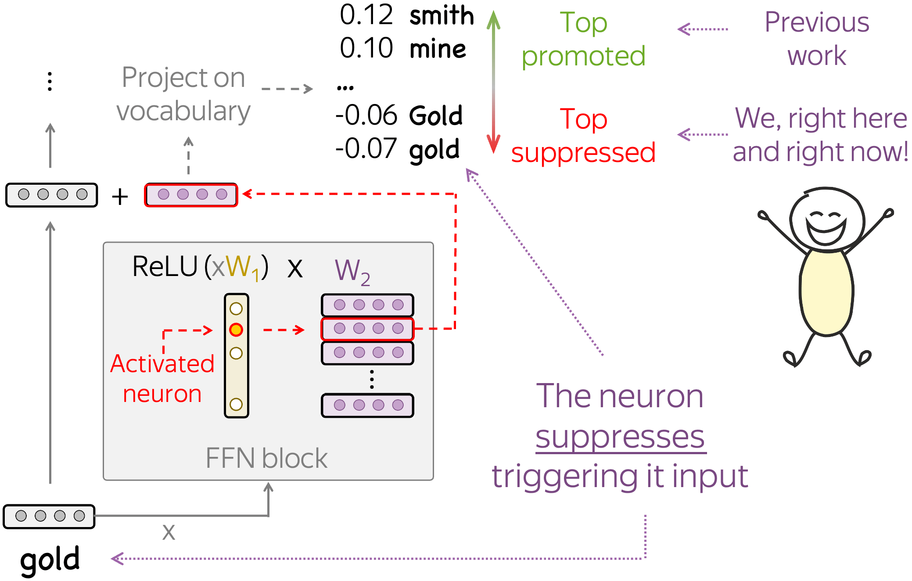
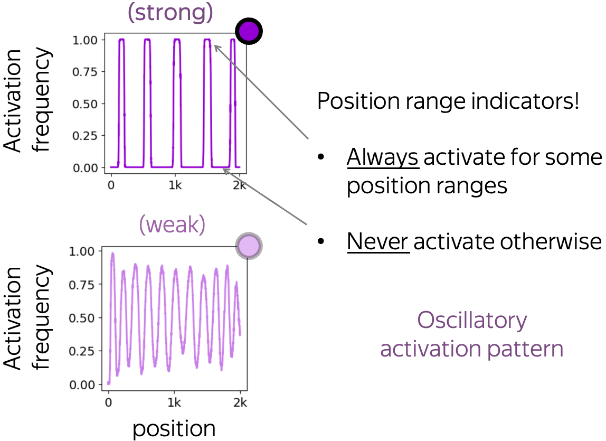
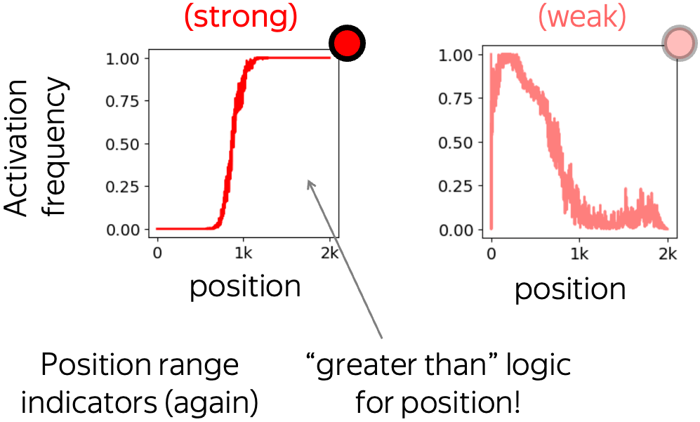
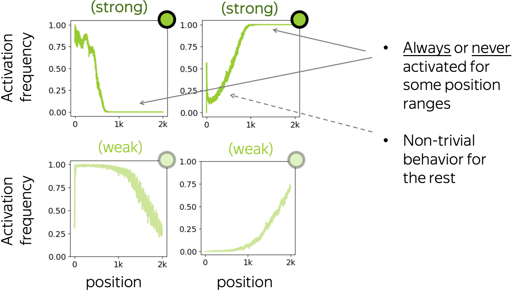
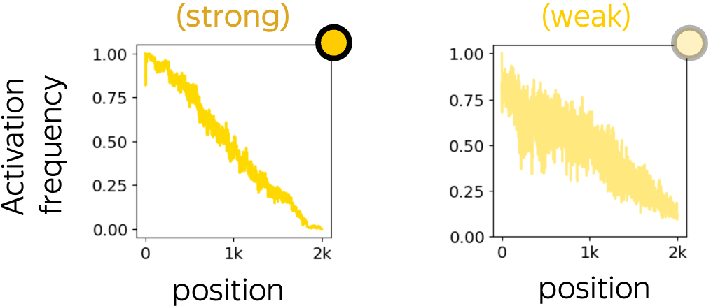

With scale, LMs become more exciting but, at the same time, harder to analyze. We show that even with simple methods and a single GPU, you can do a lot! We analyze OPT models up to 66b and find that
September 2023
Usually, neural models have lots of neurons everywhere. In case of Transformer, we could analyze neurons from the representations coming from the residual stream, attention queries/keys/values, etc. Yet, we choose to focus on the neurons inside FFNs. Why? Well,
This was our what and why — now let's come to how :)
Since we are looking at the OPT models which have the ReLU activation function, the simplest thing to look at is when a neuron is activated (non-zero) and when it is not activated (zero). Indeed, if a neuron is not activated, it does not influence the residual stream! Therefore, understanding when a neuron is active is equivalent to understanding the types of input where it influences the predictions.
Next, when a neuron is activated, it triggers the corresponding row of the second FFN layer, and this row is added to the residual stream. If we understand how this row influences the residual stream, we will understand the way our neuron influences predictions.
Overall, we are going to understand when and how various neurons influence model predictions.
Let us start with when different neurons are activated. For this, we take a large diverse collection of data, feed to a network and record neron activations. Overall, our dataset consists of over 20m tokens and contains various subsets if the Pile, Codeparrot, Reddit, etc.
We see that
When thinking about the reasons why sparsity with dead and rarely-activating neurons is only in the first half of the network, let us imagine how a network encodes "concepts" (i.e., input patterns) available in each layer in this layer's representations. Intuitively,
The model has to "spread" sets of encoded in a layer concepts across available neurons.Now, let us recall that early layers encode largely shallow lexical patterns while later layers encode high-level semantics. Since the number of possible shallow patterns is not large and, potentially, enumerable, in the early layers the model can (and, as we will see later, does) assign dedicated neurons to some features. The more neurons are available to the model, the easier it is to do so — this agrees with the results in the previous picture showing that larger models are more sparse.
Differently, the space of fine-grained semantic concepts is too large compared to the number of available neurons. This makes it hard to reserve many dedicated neuron-concept pairs. There can be some (e.g., knowledge neurons), but the number of neurons relatively small to have many highly specialized neurons.
Now, let us look more closely into the patterns encoded in the lower half of the models and try to understand the nature of the sparsity we saw above. Specifically, we analyze how neuron activations depend on an input n-gram.
Long story short, we find that our hypothesis for the lower half of the network was right! When packing concepts into neurons in the lower half of the network, the model reserves many neurons for specific features. For example, here many neurons act as token and n-gram detectors — neurons specialized on shallow lexical patterns.
N-gram detectors: activate (roughly) if and only if the input is one of a few specific n-grams.Note: In this post, we focus on unigram/token detectors. For the rest, see the paper.
Each of these token detectors is responsible for a group of several tokens that, in most of the cases, are variants of the same word: differences are only in capitalization, presence of the space-before-word special symbol, morphological form, etc. — look at the examples below.
Interestingly, across layers, token-detecting neurons are responsible for largely differing tokens. Look at the figure below: in each following layer, detected tokens mostly differ from all the tokens covered by the layers below.
All in all, this points to an ensemble-like (as opposed to sequential) behavior of the layers: layers collaborate so that token-detecting neurons cover largely different tokens in different layers. This divide-and-conquer-style strategy allows larger models to cover many tokens overall and use their capacity more effectively.
So far, we looked only at when a neuron is activated, i.e. used only the first way of interpreting a neuron. Now, let us also understand how token detectors influence the residual stream.
For this, we project the update coming from a neuron to the residual stream onto vocabulary. Differently from previous work, we look not only at the top projections, but also at the bottom: bottom negative projections show which tokens are suppressed.
We find that often token-detecting neurons deliberately suppress the tokens they detect. The figure below shows several examples of token-detecting neurons along with the top promoted and suppressed concepts. While the top promoted concepts are in line with previous work (they are potential next token candidates), the top suppressed concepts are rather unexpected: they are exactly the tokens triggering this neuron. This means that vector updates corresponding to these neurons point in the direction of the next token candidates at the same time as they point away from the tokens triggering the neuron. Note that this is not trivial since these updates play two very different roles at the same time.
Overall, for over 80% of token-detecting neurons their corresponding updates point in the negative direction from the triggering them tokens (although, the triggering tokens are not always at the very top suppressed concepts as in the examples above).
Finally, let us come to the last type of neurons we consider. Earlier when looking at dead neurons we noticed that some neurons never activate except for a few first token positions. This motivates us to look further into how position is encoded in the model and, specifically, whether some neurons are responsible for encoding positional information.
Intuitively,
Positional neurons are the ones whose activation patterns are defined by or, at least, strongly depend on token position.Formally, we identify neurons whose activations have high mutual information with position.
We gather neuron activations for many texts, evaluate activation frequency for each neuron and position and evaluate mutual information between neuron activation pattern and token position. If this mutual information is high, we call such a neuron positional. Indeed, high MI means that we can say whether a neuron is activated or not just by looking at token position (regardless of content).
We categorized positional neurons by the type if of their activation pattern: dependency of activation frequency on position. As expected, we see that often activation of such neurons is defined solely by position regardless of content: many positional neurons act as position range indicators, i.e. they activate within certain position ranges and do not activate otherwise.
Let us now briefly discuss each of these types.
 Oscillatory: up, down, repeatThese neurons have oscillatory activation pattern: their activation frequency is an oscillatory function of position. When such a pattern is strong, the activation pattern is an indicator function of position ranges. In other words, such a neuron is activated if and only if the position falls into a certain set.
Note that this activation pattern does not change across data domains. Therefore, it is defined solely by position with no regard of textual content.
 Both types of activation extremesThese are the neurons whose activation pattern is not oscillatory but still has intervals where activation frequency reaches both "activation extremes": 0 (never activated) and 1 (always activated). Similarly to oscillatory neurons, when such a pattern is strong, it is also (almost) an indicator function.
Typically, these neurons implement "less than" or "greater than" logic for position.
 Only one of the two activation extremesDifferently from the previous two types, activation patterns for these neurons can reach only one of the extreme values 0 or 1. While this means that they never behave as indicator functions, there are position ranges where a neuron being activated or not depends solely on token position.
 Other: depend on but are not defined by positionFinally, these are the neurons whose activation pattern strongly depends on position but does not have intervals where activation frequency stays 0 or 1. Typically, these activation patterns have lower mutual information with position than the previous three types.
Now that we classified positional neurons into several types according to their activation pattern, let us look inside our models and see how they encode position. For each of the models, the figure below shows all positional neurons found in each of their layers. Each circle corresponds to a single neuron, and colors indicate the types we discussed above.
Overall, we notice that smaller models rely substantially on oscillatory neurons: this is the most frequent type of positional neurons for models smaller than 6.7b of parameters. In combination with many less than/greater than neurons, the model is able to derive token's absolute position rather accurately. Interestingly, larger models do not have oscillatory neurons and rely on more generic patterns shown with red- and green-colored circles.
Interestingly, positional neurons seem to collaborate to cover the full set of positions together. For example, let us look more closely at the 10 strongly oscillatory neurons in the second layer of the 125m model. Since they act as indicator functions, we can plot position ranges indicated by each of these neurons.
We see that
Recently, it turned out that even without positional encoding, autoregressive language models still learn positional information. What if the mechanism these "NoPos" models use to encode position is positional neurons? Let us find out!
We took a replica of the GPT-2 training data (smaller dataset than was used in OPT training) and trained two 125m models: with (standard) and without positional encodings. We see that even when trained without positional encoding, the model still has a lot of strong positional neurons! Patterns, however, are different fromt the standard training. For example, the NoPos model does not have oscillatory neurons: apparently, figuring out absolute position without positional encoding is hard.
Finally, positional neurons are not only cool, but they also question the widely accepted view of feed-forward Transformer layers as key-value memories. The way it is stated in the original paper (Geva et al, 2021), each key correlates with textual patterns in the training examples, and each value induces a distribution over the output vocabulary. My illustration of this view if below.
While some parts of FFNs do behave this way, positional neurons do not fit this view. Indeed, if these neurons are triggered only based on position (e.g., the position range indicators we saw above), then the keys have nothing to do with textual patterns!

Overall, these are good news for the researchers: it means that the role of FFNs in the Transformer is still poorly understood. Hence, we have work to do :)
Most of the things we discussed so far are found in all the models...except for the 350m! This was surprizing, so we looked at the code and noticed that in the 350m model, the LayerNorm is applied after the layer, not before as for the rest.
This seemingly minor difference (although, if you trained Transformers long enough you should know that this is very, very important) influences interpretability of the models quite a lot. Nevertheless, we do think that the 350m model learns roughly same things as the rest of the models, the way it shows up (or, to be precise, does not show up) is different from the rest. Potentially, we could find some alternative to dead and n-gram neurons in some other way rather than by looking at neurons, but that would be a completely different story.
In the paper, we also mention other examples where changing modeling bits affected interpretability - if interested, look there!
That's right, all the main experiments in this paper were done on a single GPU! This means, analysis of large language models can be done in a way that is accessible to academic labs. In this work, we achieved this by choosing very simple analysis tools. We use only sets of neuron values for some data, i.e. we run only forward passes of the full model or its several first layers. Since large models do not fit in a single GPU, we load one layer at a time keeping the rest of the layers on CPU. This allows us to pre-record neuron activations for large models, save them and analyze later.